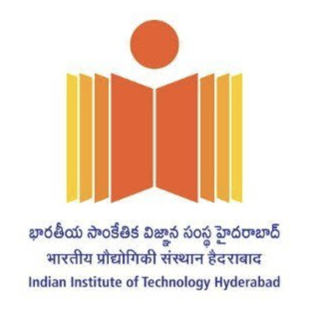
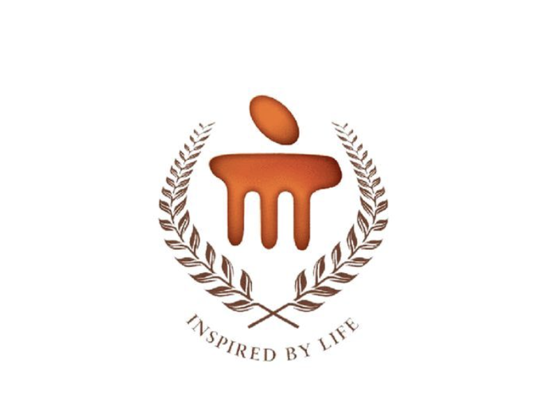

Machine Learning Engineering Intern
Adobe
Hi, I am Nikita. I am a Master's student in Computer Vision at
Carnegie Mellon University.
Over the past few years, I've had the opportunity to work on a variety of ML problems .
I have been recently working in Planning and Simulation at Aurora, building models for end to end closed loop planning in autonomous driving focused on abstract scene representation.
Earlier I was working at Bosch Research in Perception focused on optical flow estimation and domain adaptation. My work has broadly been in computer vision focused on VLMs, and generative models.
I have also previously worked in LLM model compression, Reliable and Trustworthy ML and currently working at Adobe as a Machine Learning Engineer on Agent Evaluation.
I love solving problems and building solutions that are impactful. When I am not
Machine Learning Engineering Intern
Adobe
May 2026 - Present
Built an end-to-end evaluation platform for enterprise AI agents featuring synthetic benchmark generation, trajectory evaluation, LLM-as-a-Judge scoring, and multi-turn agent validation.
Graduate Research Assistant
Aurora
Jan 2026 - May 2026
Built a closed-loop autonomous driving benchmark for evaluating end-to-end planning policies in complex, long-tail scenarios. Created a rasterization pipeline for on-policy simulation rollouts and benchmarked planning models on adversarially perturbed nuPlan and Waymo Open Motion datasets.
Machine Learning Intern
Lexsi Labs
Jan 2025 - Jul 2025
Engineered a post-training model alignment library for relevance-based pruning across CNNs, BERT, ViTs, and LLMs, achieving up to 65% compression.
Computer Vision Research Intern
Bosch Research
Nov 2023 - Oct 2024
Developed an unsupervised optical flow estimation pipeline for label transfer in autonomous vehicles, added dataset interleaving and evaluation methods, and improved end-point error by 20%.
Research Assistant, Human Sensing
Carnegie Mellon University
Sept 2025 - Dec 2025
Explored 2D vision-language models for scene understanding using multi-view reasoning and view selection. Integrated Gaussian splatting and depth-guided representations for spatial and contextual understanding.
MITACS Research Intern
University of Calgary
May 2024 - Aug 2024
Built a framework to identify bias and apply single-stage and multi-stage mitigation strategies. Contributed to the Ischemic Stroke Segmentation Challenge and ranked third globally.

Research Intern
IIT Hyderabad
May 2023 - May 2024
Worked on fairness in ML models using meta learning and gradient alignment. Proposed a MAML-based algorithm for sub-population bias reduction with a 20% improvement in metrics.
Carnegie Mellon University
2025 - Dec 2026
Visual Learning and Recognition, Advanced Computer Vision, Introduction to Robot Learning, LLM systems, Multi-Modal Learning

Manipal Institute of Technology
2021 - 2025
For the full list of publications, please visit Google Scholar.
FaAlGrad: Fairness through Alignment of Gradients across Different Subpopulations Transactions on Machine Learning Research Journal, 2025.
Interpretability-Aware Pruning for Efficient Medical Image Analysis EMA4@MICCAI 2025.
Fairness in healthcare: Assessing data bias and algorithmic fairness 2024 20th International Symposium on Medical Information Processing and Analysis, 2024.
Multi-Modal Agent Evaluation
SplatEdit: Text Driven 3D Gaussian Splat Editing
Eye Can Do
DAAD WISE Scholarship 2024 for a research project at TU Munich.
Mitacs GRI 2024: 12-week paid internship with a 15,000 CAD scholarship.
Manipal Hackathon 2024: First place among 400+ teams, prize 80,000 INR.